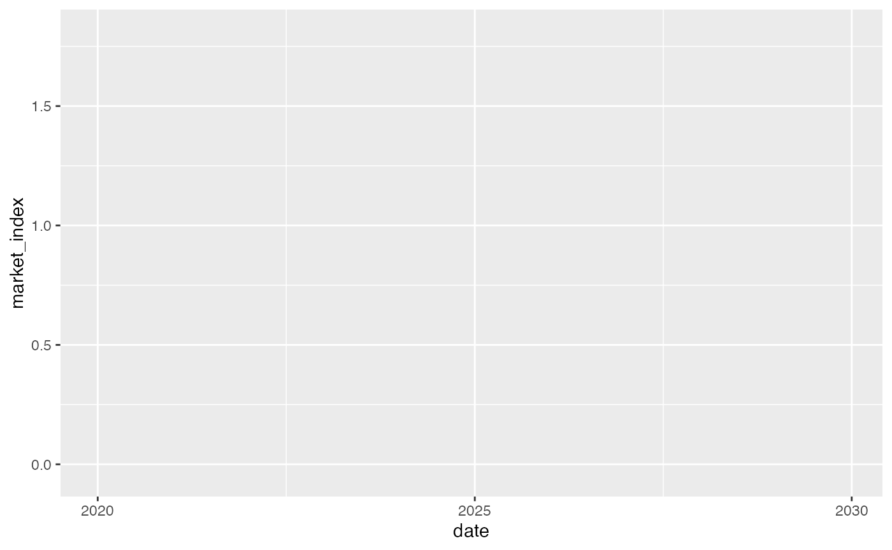
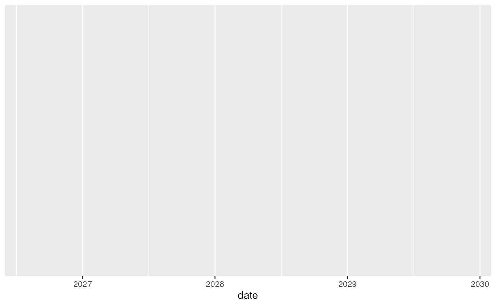

Causal Time-Series Impact Analysis
causal-impact.RmdüìÖ Causal Time-Series Impact Analysis
Causal impact analysis estimates how an intervention affects an outcome over time. In financial settings, this might reflect the effect of a policy change, economic shock, or strategy shift.
üì¶ Load the Macro Shocks Dataset
## date interest_rate gdp_growth market_index
## 1 2020-01-01 0.04858548 0.02098241 0.03418012
## 2 2020-02-01 0.03740164 0.02505696 0.05356738
## 3 2020-03-01 0.04924685 0.02460699 0.04155380
## 4 2020-04-01 0.05109889 0.01260686 0.01707771
## 5 2020-05-01 0.02392792 0.02387595 0.02444632
## 6 2020-06-01 0.06718417 0.01306215 -0.04220713We’ll simulate an intervention (e.g. policy shock) occurring at time point 80.
üß™ Create Pre/Post-Intervention Periods
macro_shocks <- macro_shocks %>%
mutate(time = row_number(),
intervention = ifelse(time >= 80, 1, 0))üìà Plot the Time Series
ggplot(macro_shocks, aes(x = date, y = market_index)) +
geom_line() +
geom_vline(xintercept = macro_shocks$date[80], linetype = "dashed", color = "red") +
labs(title = "Market Index with Simulated Intervention at Month 80",
x = "Date", y = "Market Index") +
theme_minimal()
⚙️ Estimate Counterfactual Using Linear Regression
pre_data <- macro_shocks %>% filter(intervention == 0)
post_data <- macro_shocks %>% filter(intervention == 1)
model <- lm(market_index ~ interest_rate + gdp_growth, data = pre_data)
post_data$predicted <- predict(model, newdata = post_data)
ggplot(post_data, aes(x = date)) +
geom_line(aes(y = market_index), color = "blue") +
geom_line(aes(y = predicted), color = "orange", linetype = "dashed") +
labs(title = "Observed vs Counterfactual Post-Intervention",
y = "Market Index", x = "Date") +
theme_minimal()
üßæ Optional: Use CausalImpact Package
If installed:
# install.packages("CausalImpact")
# library(CausalImpact)
# ts_data <- ts(macro_shocks$market_index, frequency = 12)
# ts_covariates <- macro_shocks %>% select(interest_rate, gdp_growth)
# impact <- CausalImpact(cbind(ts_data, ts_covariates), 1, 79)
# plot(impact)
# summary(impact)✅ Conclusion
Using even simple pre/post modeling, we can estimate what the market index might have looked like had the “shock” not occurred. This approach helps analysts measure the causal effect of real-world events over time.
üìñ Citation
citation("CausalInvestData")## To cite the CausalInvestData package in publications, use:
##
## Conilias Zvobwo E (2025). _CausalInvestData: Simulated Datasets for
## Causal Inference in Investment Management_. R package version 0.1.0,
## <https://github.com/edzai/CausalInvestData>.
##
## A BibTeX entry for LaTeX users is
##
## @Manual{,
## title = {CausalInvestData: Simulated Datasets for Causal Inference in Investment Management},
## author = {Edzai {Conilias Zvobwo}},
## year = {2025},
## note = {R package version 0.1.0},
## url = {https://github.com/edzai/CausalInvestData},
## }